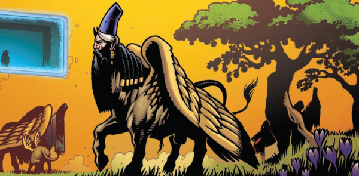

Somehow, this manages to normalize an animal-skull-headed Brit-Cit occult detective (Inspector J. Strange) and teams him up with new recruit Bekky Darke (Psi Division).
Art by Colin MacNeil, Len O'Grady & Dee Cunniffe
| Story Title | Parts | Pages | w indicates a wraparound coverCovers | Year(s) | Issues | Writer | Artist | Colourist | Letterer |
|---|---|---|---|---|---|---|---|---|---|
From Devlin WaughVile Bodies | 1 | 12 | 0 | 2004 | M227 | John Smith | Colin MacNeil | <-- | Ellie de Ville |
| New Blood | 5 | 46 | 0 | 2012 | M319-M323 | John Smith | Colin MacNeil | Len O'Grady Dee Cunniffevarious | Elle De Ville |
| year | episodes | pages |
| 1998 | 0 | 0 |
| 1999 | 0 | 0 |
| 2000 | 0 | 0 |
| 2001 | 0 | 0 |
| 2002 | 0 | 0 |
| 2003 | 0 | 0 |
| 2004 | 1 | 12 |
| 2005 | 0 | 0 |
| 2006 | 0 | 0 |
| 2007 | 0 | 0 |
| 2008 | 0 | 0 |
| 2009 | 0 | 0 |
| 2010 | 0 | 0 |
| 2011 | 0 | 0 |
| 2012 | 5 | 46 |
| 2013 | 0 | 0 |
| 2014 | 0 | 0 |
| 2015 | 0 | 0 |
| 2016 | 0 | 0 |
| 2017 | 0 | 0 |
| 2018 | 0 | 0 |
| 2019 | 0 | 0 |